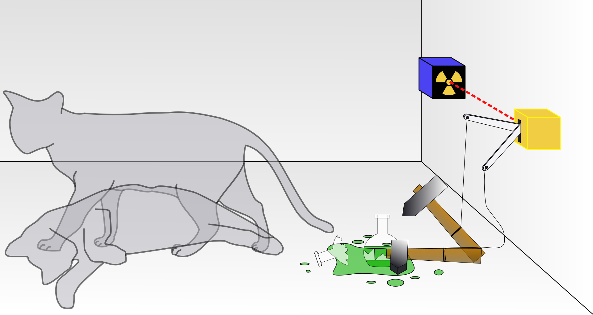

The mathematics behind quantum principles is well-defined and has been experimentally verified.
However, from the very beginning, a major question has been how to interpret what we observe.
To date, several interpretations of quantum mechanics have been proposed.
For an extensive list, see this Wikipedia page: "An interpretation of quantum mechanics is an attempt to explain how the mathematical theory of quantum mechanics might correspond to experienced reality."
Here, we keep our list very brief.
This is one of the most widely accepted interpretations.
Quantum systems are not deterministic. While in superposition, it is impossible to observe all possible outcomes simultaneously.
Any measurement forces the system to collapse into one of the expected outcomes with certain probabilities. While we cannot predict the exact outcome before measurement, we can determine its probabilities.
This can be interpreted as "the act of measurement affecting reality, with the observer playing a fundamental role in determining the outcome."
TThis leads to the question: What exactly constitutes a measurement? Is it the presence of a human observer? Interaction with the environment?
How does this fit into the broader picture? Does it imply subjectivity in physics?
This was a critic by Schrödinger in 1935 of Copenhagen interpretation.
From Wikipedia:
"Schrödinger's cat: a cat, a flask of poison, and a radioactive source connected to a Geiger counter are placed in a sealed box.
As illustrated, the quantum description uses a superposition of an alive cat and one that has died."
radioactivity ⇒ the Geiger counter detects it ⇒ the flask is shattered ⇒ releasing the poison ⇒ the cat is dead
no radioactivity ⇒ the cat is alive
Radioactivity is a random subatomic event, existing in a superposition of "occurring" and "not occurring."
Therefore, the cat, being correlated with the radioactive event, should also be in a superposition of "dead" and "alive."
In other words, a subatomic event places the cat in a superposition as well. Until the box is opened, the cat remains in superposition.
All possible outcomes of a measurement occur in separate, non-interacting universes.
A quantum system does not collapse into a single outcome.
Quantum systems are deterministic, existing in many parallel but non-communicating worlds.
The universe consists of a quantum superposition of independent parallel worlds, with their number continuously increasing.
There is no fundamental distinction between the classical and quantum domains—everything is quantum.
Quantum systems are highly fragile, interacting rapidly with their environments. As a result, their quantum states can collapse even in the absence of measurement devices.
This phenomenon, known as quantum decoherence, leads to the loss of quantum coherence.
It explains why we do not observe superposition in the classical world.
Decoherence is also one of the biggest challenges in quantum computing, as it causes the loss of information.